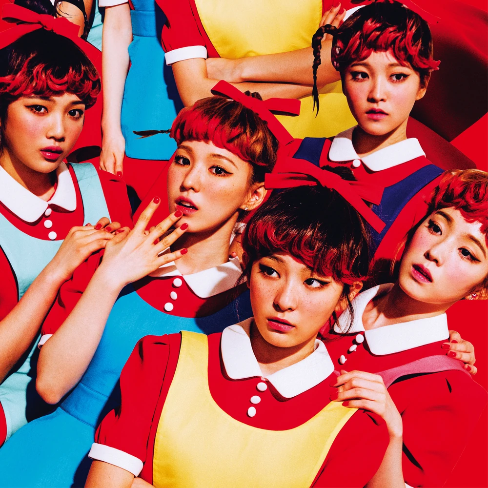
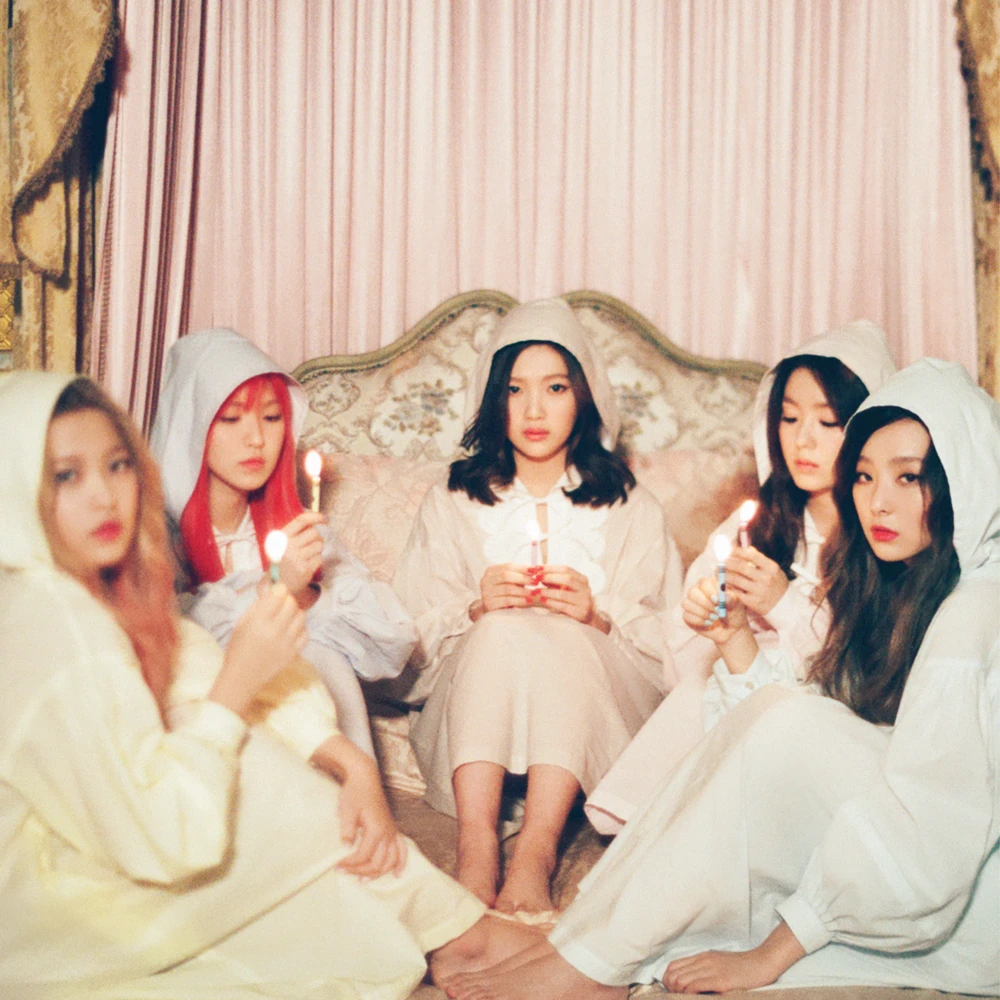

Concepts
Musically, the work of Red Velvet reflects their own group name:
their predominantly-pop "red" side experiments occasionally with electronic and funk,
and while their "velvet" side focuses on '90s-influenced R&B with elements of ballad and hip hop.
The Red
The "Red" side of Red Velvet refers to the group's more upbeat and energetic concept, which is characterized by their catchy, pop-style music and bright, playful image. This concept is often associated with their earlier songs such as "Happiness," "Ice Cream Cake," "Dumb Dumb," and "Red Flavor" which have more carefree and energetic sounds and often have more colorful and cheerful music videos. The group's red concept is also distinguished by its catchy hooks, infectious beats and cheery melodies, which have come to represent the group’s distinctive sound. This concept is also associated with their on-stage performance, where the members are known for their energetic choreography, high energy, lively stage presence and technical movements.
The Velvet
“Velvet” side of Red Velvet refers to the group's more calmer and sophisticated concept, which is characterized by their more mellow, R&B-style music and elegant, refined portrayal. This concept is noticeable with their later songs such as "Automatic," "One of These Nights," "Bad Boy," and "Peek-A-Boo" which have a more gentle and R&B-inspired sound and have more classy and mature music videos. Their velvet concept is characterized by its smooth vocals, soothing melodies, and introspective lyrics, which is the total opposite of their “Red” side. This concept tends to focus more on the group’s vocals, with the members showcasing their singing talents, often accompanied by a moody atmosphere on-stage and during their performances.